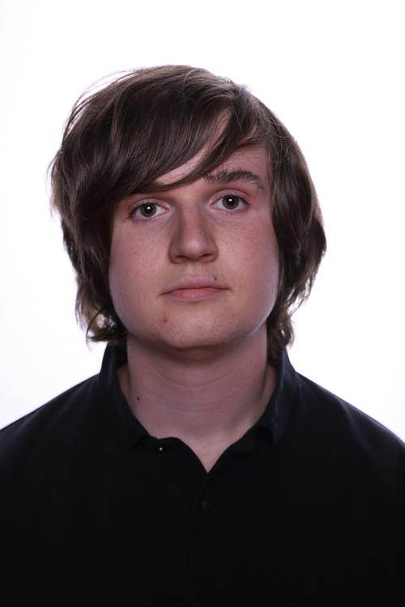

Clément Bruley (chef de projet):
La plupart des élèves d'EPITA ont commencé à toucher à l'informatique
depuis de nombreuses années. Pour ma part, j'ai commencé réellement
lorsque je suis entré à EPITA. Lors des deux derniers projets, nous
avons approfondi nos connaissances en C# lors du S2 et en C99 lors
du S3. Ce projet va me permettre d'avoir de plus grandes connaissances
en C qui est un langage très utile dans le domaine de l'informatique.
Possiblement, nous allons pouvoir appliqué ce que nous avons appris lors
du séminaire UNIX. J'ai toujours été intéressé par les IA. Grâce à ce
projet, je vais pouvoir développer mes compétences dans ce domaine.
Avec le reste du groupe nous avons décider de m'attribuer le rôle de chef
de projet. Il me semble que c'est important d'avoir quelqu'un qui va
"diriger" le projet. Néanmoins, ce rôle ne va pas être très grand,
car il ne s'agit pas d'un grand projet tel que pourrait le faire des
entreprises.
Clément Iliou:
 Je suis étudiant en deuxième année de classe préparatoire à EPITA. J’ai effectué une terminale S spécialité SVT. Avant EPITA, je n’avais pas fait de programmation dans un cadre scolaire. Cependant, je me suis toujours intéressé à l’informatique en général. J’aime beaucoup les travaux de groupe, car l'on peut ainsi profiter des différents atouts de tous. La partie graphique du jeu m’encourage à approfondir le domaine du traitement d’image que je trouve passionnant. Ce projet est un moyen pour moi de croiser les connaissances acquises en développement de jeu vidéo durant le projet de S2 et celles sur le machine learning et les réseaux de neurones vu pendant le projet de S3. J’ai hâte après EPITA de pouvoir développer ce genre de programme dans un cadre professionnel. Ce projet devrait me permettre d'approfondir mes connaissances en C99 et en GTK.
Rémi Monteil:
Je suis rentré à EPITA en 2019. Depuis j'ai appris plusieurs langages tels que le Caml, c# et le c. Mais surtout j'ai appris à les exploiter au maximum avec les projets. J'avais développé le gameplay du jeu de S2 et je me suis occupé du Neural-Network de l'OCR. Je suis très attiré par ce qui touche à l'IA autant dans ces utilisations exotiques que de son apprentissage si divers. La difficulté et les erreurs que j'ai commises lors de l'OCR ne sont que de l'expérience supplémentaire pour appréhender cette nouvelle IA qui me semble plus difficile par sa méthode d'apprentissage non supervisée. J'espère partagées au mieux mes connaissances des projets précédents pour accompagner mes collègues dans ce projet.
Alexandre Bourcier:
Entré à l'EPITA en 2019, je me suis toujours efforcé de faire beaucoup de
programmation pour avoir des acquis et une expérience solide dans cette
discipline. Ainsi, avec le projet de S2, j'avais pris en charge une partie
très importante de la programmation d'un jeu vidéo(multijoueur et gameplay).
Lors du projet de S2, j'ai pris en charge l'interface graphique, le
pré-traitement et la segmentation de l'OCR. Ainsi, toutes ces expériences
m'ont permis d'avoir des acquis assez solides et d'aborder ce projet de S4
sereinement.
L'idée de refaire une intelligence artificielle me plaît beaucoup, car
lors de notre projet de S3, le réseau de neurones était loin d'être
impeccable et je souhaite pouvoir prendre ma revanche sur ce projet.
Pendant les projets, j'apprécie toujours commencer tout de suite les
projets pour pouvoir vraiment étaler tout le travail sur le temps imparti
et ne pas courir à la fin et rentre quelque chose de moyennement
fonctionnel. Un point très important aussi est de discuter de la conception
du projet, notamment le prototype des fonction et comment les faire
interagir. Tout cela nous permettra, j'espère de faire un beau projet
fonctionnel.